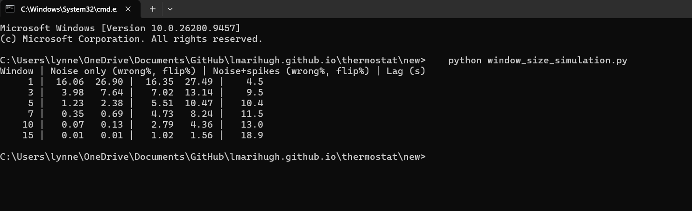

Thermostat narrative
Why I chose this artifact, how the enhancement improved it, and what I learned along the way.
← Back to the Thermostat overview
1. The artifact
This artifact is a smart thermostat that runs on a Raspberry Pi. It was written in Python for CS 350. It is a state machine with three states: off, heat, and cool. It is cycled by three physical buttons: a blue one to lower the temperature, a red one to raise the temperature, and an orange one to cycle through the states. A red LED and a blue LED show heating and cooling activity. An LCD shows the temperature and set point. A background thread also sends the status over a serial connection every 30 seconds.
2. Why it is in my portfolio and how it improved
This artifact shows algorithmic thinking applied to real data that may not be perfect. The original updateLights() compared a single raw sensor reading to the set point, which could cause a single noisy reading to flip the lights regardless of whether the room temperature had changed. The skills I demonstrated in the changes below were choosing a bounded data structure to fix a problem, analyzing its cost, handling errors in code that talks to hardware, and testing with evidence instead of assuming. The two changes I implemented were:
- A rolling-window data structure. I added a
TemperatureBufferclass that stores the most recent readings in a fixed-size window and returns their average. Because the window is small and fixed, adding a reading and averaging it are cheap in both time and memory. - Error handling. I wrapped the sensor read and serial write in
try/except. If the sensor read fails, the code falls back to the last smoothed value. If there is no smoothed value yet, it falls back to the set point instead.
3. Testing the window size
In my feedback on Milestone Three, my professor recommended testing several window sizes with simulated noisy readings, which is exactly what I did. I wrote a simulation (window_size_simulation.py) that follows the thermostat's read schedule. I used six readings per 10-second cycle, with the lights chosen once per cycle. It models a room held at 72.5°F with a 72°F set point, so the floored reading sits just above the line where noise could trip it. The simulated sensor noise is 0.5°F, and in the spike case 2% of the readings are off by 4°F. It is worth noting that all these numbers are assumptions, not direct measurements. In the table below you can see the simulation results. "Wrong Decisions" is how often the light decision was wrong, and "Lag" is the average time to respond to a real change. .
| Window | Wrong decisions | Lag (s) |
|---|---|---|
| 1 | 16.06% | 4.5 |
| 3 | 3.98% | 9.5 |
| 5 | 1.23% | 10.4 |
| 7 (chosen) | 0.35% | 11.5 |
| 10 | 0.07% | 13.0 |
| 15 | 0.01% | 18.9 |

window_size_simulation.py myself. Besides the test above, I also checked the finished code's logic with automated checks against simulated hardware. The window never exceeded 7 readings, a failed sensor read falls back correctly, and the red light pulses or stays solid at the proper times in heat mode. As a note, I only tested with simulators, and did not test on the physical Raspberry Pi.
4. Reflection
What I learned
This test taught me that design choices must be backed by real evidence, and that even simulated evidence is better than none. The original choice of five, which was selected by default in the CS 350 course, was reasonable. However, seven, or even ten, reduces the errors further while adding only a few seconds of lag. This is where trade-offs come into play between design, functionality, and user experience.
When building the simulation, I needed to read the code very closely to make sure I didn't miss anything, and I did miss something. The buffer gets fed every single time getFahrenheit() is called, which means a window of seven covers about one 10-second cycle, not seven separate moments. This is something I would have missed without simulating the read schedule.
Challenges
The hardest part for me was testing code that depends on hardware. As I mentioned in my milestone narrative, I had packed everything away and was unable to access it for this class. I used simulators and built code around them to test the logic, though not the wiring.
Feedback
The feedback I received from my professor was to test the multiple window sizes with simulate noisy readings to justify my choice. I did do that and it ended up changing my design from 5 to 7.
Course outcomes
I believe I fully met the course outcomes on designing and evaluating solutions while managing the tradeoffs. This was showcased when it came to trading off more reliable windows for a few seconds more lag time. I would say I mostly met the well-founded techniques and tools throughout the testing, minus the hardware side. The error handling supports the security mindset outcome.